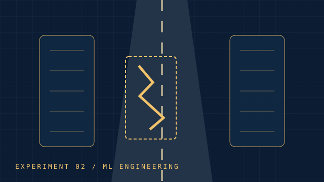
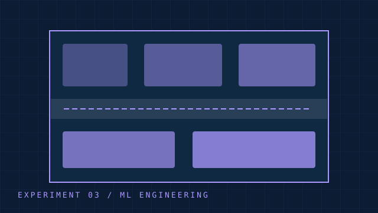
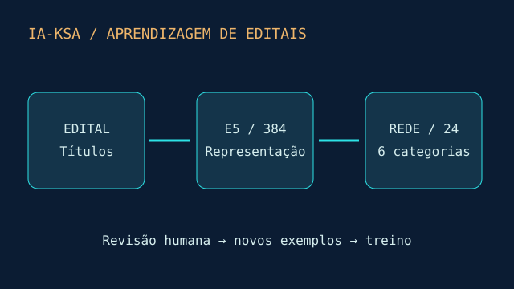
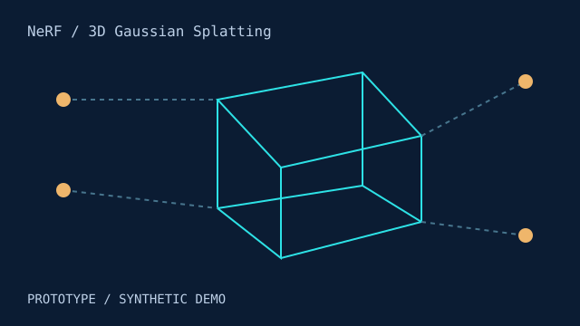
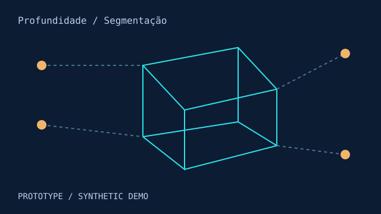

01
01
MVP de pesquisa
Saneamento inteligente
Planejamento de expansão de redes com orçamento limitado.
Contexto de inspiraçãoANA · Águas Brasil · BiomaData
Classificação, geração e redes de política e valor.
7 projetos
01
Planejamento de expansão de redes com orçamento limitado.
Contexto de inspiraçãoANA · Águas Brasil · BiomaData

02Classificação visual e avaliação sob perturbações adversariais.
Contexto de inspiraçãoGrupo CCR · Detran-DF

03Geração adversarial de layouts com validação geométrica.
Contexto de inspiraçãoMarcopolo
 05
05
Jogo abstrato entre agentes de ataque e defesa.
Contexto de inspiraçãoSenhaSegura · Protege

10Aprendizagem de máquina para organizar editais e incorporar títulos revisados pelo usuário.

13Protótipo inicial
Comparar representações de uma instalação para visitas virtuais.

14Protótipo inicial
Separar regiões da cena e comparar sua profundidade relativa.